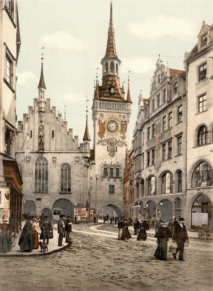
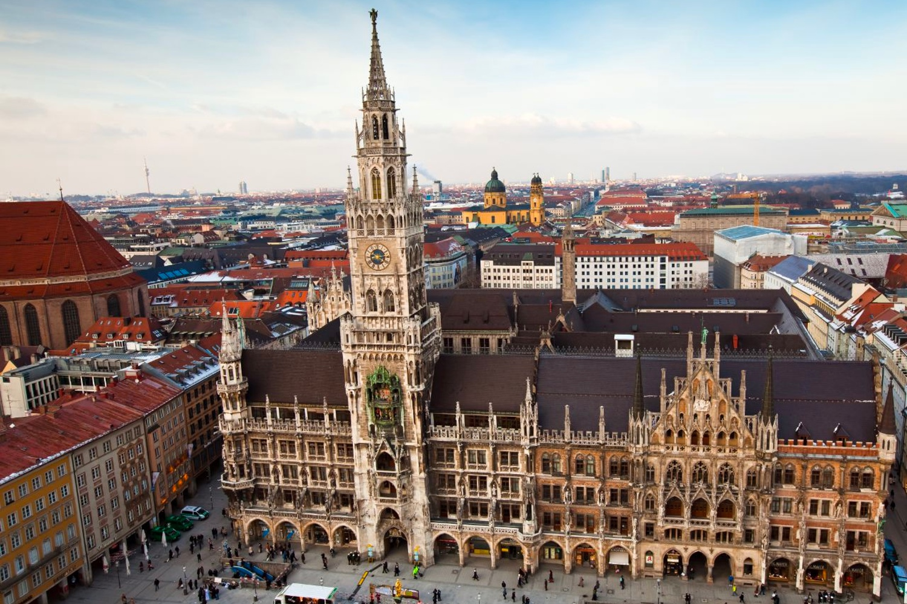

Juan Esteban Rozo Urbina
Universidad Nacional de Colombia


Munich, or München (“Home of the Monks”), traces its origins to the Benedictine monastery at Tegernsee, which
was probably founded in 750 CE. In 1157 Henry the Lion, duke of Bavaria, granted the monks the right to
establish a market where the road from Salzburg met the Isar River. A bridge was built across the Isar the
following year, and the marketplace was fortified.
In 1255 Munich became the home of the Wittelsbach family, which had succeeded to the duchy of Bavaria in 1180.
For more than 700 years the Wittelsbachs would be closely connected with the town’s destiny. In the early 14th
century the first of the Wittelsbach line of Holy Roman emperors, Louis IV (Louis the Bavarian), expanded the
town to the size at which it remained up to the end of the 18th century. Under the Bavarian elector Maximilian
I (1597–1651), a powerful and effective ruler, Munich increased in wealth and size and prospered until the
Thirty Years’ War. It was occupied by the Swedes under Gustav II Adolf (Gustavus Adolphus) in 1632, and in 1634
a plague epidemic resulted in the death of about one-third of its population.

The third Wittelsbach who left his mark on the community was Louis I, king of Bavaria from 1825 to 1848. Louis
planned and created modern Munich, and his architects established the city’s characteristic appearance in the
public buildings they designed. The 19th century was Munich’s greatest period of growth and development.
Protestants became citizens for the first time in what had been until then a purely Roman Catholic town. The
city’s population of 100,000 in 1854 grew to 500,000 by 1900. Munich’s cultural importance in Europe was enhanced
when Louis II, by his championing of the composer Richard Wagner, revived its fame as a city of music and the stage.
The rule of the Wittelsbach dynasty finally ended with the self-imposed exile of Louis III in November 1918, and,
in the aftermath of World War I, Munich became a hotbed of right-wing political ferment. It was in Munich that
Adolf Hitler joined the Nazi Party and became its leader. The beer cellar where he held meetings that led to the
Beer Hall Putsch (“rising”) against the Bavarian authorities in November 1923 can still be seen. In World War II
Munich suffered heavily from Allied bombing raids, which destroyed more than 40 percent of its buildings.